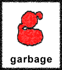
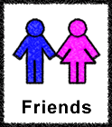
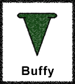
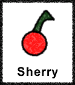
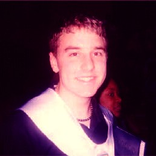

My site is named "Thursday" after a poem I wrote during my senior year of high school. It describes a time in my life when I was dealing with many issues involving sexuality, family, friends, and rejection. It was all terribly emotional and damaging, and that poem is my little souvenir. It is really an explanation of how things seem at this place in time: I'm poised at a junction—between the horrible work week and the blissful abyss of the forthcoming weekend, between peril and pleasantness—spanning the beginning, crashing toward the end.
This website was updated from January 2002 until August 2005. It contains many webpages that I made during my tenure as an undergrad at the University of Georgia. I made many tribute pages for my closest friends and maintained a Blog for every semester I attended the school. If you would like to learn more about "Thursday" and what it all means, please visit the About Page. Thank you, and enjoy!

| WARNING: Random picture of hot boys...this will not be removed from the website ;-) |
| From the first day I arrived at UGA, I resolved to live my life out of the closet. I did not want to compound a lie I had been living for years—I wanted to be honest and proud. Visit the Gay Page to learn how living my life in college, out and proud, truly enriched and livened the experience for me. | |
|  | Every since I first heard the haunting chords of "#1 Crush," I knew there was something about garbage. The band formed in 1994 and has since spawned four excellent Alternative music albums. Visit the garbage Page to learn why I love this group of misfits and the music they create. Also included is a list of my favorite songs along with highlighted lyric selections. |
|  | Before I created my website, my AIM profile consisted of one-to-two line shout-outs to my various friends. To save space, I moved these shout-outs to my new website. In the past four years, I have updated and expanded the original Friends Pages and added even more. Visit the Friends Page to meet the people that made my college experience memorable. |
|  | From March 3, 1997 to May 20, 2003, the television program Buffy the Vampire Slayer engaged in a battle against evil. It was a remarkable show and it left us with seven seasons of television master work. Visit the Buffy Page to learn my opinion of the show that changed television. Also available is a selection of my ten favorite episodes. |
| As any other doofus with an Internet connection, I have secured a valuable array of useful links that are both entertaining and useful. I suppose while making my webpage I noticed most personal webpages had their very own Links Page. This is mine. Visit the Links Page to see my categorized catalog of links that may serve to brighten your duldrum day. | |
|  | Since creating her during my 7th grade year, Sherry Cherry has always been merry. I never dared share her with the world. She was always my private little distraction, but since creating my own webpage, it has always been my dream to have my very own web comic. Visit the Sherry Page to see the adventures of Sherry and all her nutty pals. |
| This is the main attraction of "Thursday." Since the Spring of 2002, I have kept a weekly Internet Journal—or Blog. At the conclusion of my four years here at UGA, I have completed my collection of Blogs by archiving all seven semesters of journals as well as including a selection from my personal journal from the Fall of 2001, my first semester at UGA. Visit the Blog page to witness my personal narrative of my four years. Also included are the 4 special Blog Retrospectives complete with summary reflection and highlights. | |
| Though I have never been one to take pictures, I do have quite a few photogenic memories of my four years at UGA. Whether it be a random roadtrip, a candid photo, or an embarassing party snapshot, you'll find them all here. Visit the Galleries Page to see the selection of photos I have posted throughout the site as well as photos you will find only here. | |
| Since before I even created my website, I have had an interest in writing poetry. I indulged this desire througout my time at UGA. I wrote some memorable poems on my own and also under the guidence of my creative writing professors. Though I have aborted my more insepid pre-college poetry, there remains a very unique selection of poems I think you will find most enjoyable. Visit the Poems Page to discover my more abstract view of the world. |

Though my webpage is all about me, the only place you could ever get a brief synopsis of myself was right here. If you can't stand sifting through page after page of content, hopefully this will be your one stop spot for everything about myself.
- I am an avid fan of the show Buffy the Vampire Slayer, and I own all the seasons on DVD. From 1997 until 2003, it was the best show on television. Visit my Buffy Page to learn more about why I think the Slayer kicks ass!
- As far as my musical tastes, I am into a whole variety of things. Of course, my favorite band is garbage. If you haven't figured it out already, I have made a whole webpage dedicated to them, the garbage Page. Go there to learn more about how I came to admire their music. There are other bands that I really love, like New Order, The Cure, Lauryn Hill, The Smiths, The Flaming Lips, Madonna, Kylie Minogue, Fleetwood mac, and any other 80's band or Alternative gem. Also, I am parcial to Japanese mp3's (downloaded credit themes from the anime Inuyasha.)
- While I matriculated at UGA, I lived my life out of the closet. I am gay and I am very proud of that. I was board member to the UGA gay student union, Lambda Alliance. If you are also a queer or questioning undergrad at the University (or even an ally), please go to the Lambda website to learn more about what it's like to be gay at UGA.
- I'm a writer. Though I mostly wrote in my Blog while I kept the website, I also published a few poems online. For a good idea of my writing talents, you can check out my Poems Page. Featured is the title poem for the website, Thursday. To review my once weekly exercise of my writing talents, please visit my Blog Archives.
- If you didn't know already, I am an alumni of the University of Georgia. It's a wonderful town, despite a gaping lack of diversity. I still seemed to manage though. If you're interested in learning more about the University, visit us at uga.edu.
- Other than Buffy, I enjoy many television shows, which include some fun cartoon programs like Futurama, The Simpsons, Daria, and The Family Guy. Also, I watch alittle anime when it's really late and there's not much on. My favorite anime is Inuyasha, which is a fabulout feudal fairy tale on adult swim. As far as hardcore TV watching, there's not much I watch on a regular basis. You may also catch me watching The Sunday Night Sex Show from time to time. Also, Some of my favorite movies include Amelie, Trois Colours: Rouge, Donnie Darko, Contact, Chicken Run, Requiem for a Dream, Kill Bill Vol. 2, Eternal Sunshine of the Spotless Mind and In The Bleak Midwinter.
- My first dog, Brandy, was put to sleep on June 14, 2001. I made her a sort of tribute page with some interesting pictures. Go to Brandy's Page to see them and to read about why she was so special. You may also visit my Pets Page to see pictures of my cat Lily and my mom's dog Joey. Both are very unique and hysterical. Lily is the sweetest cat ever, and Joey is a little wimp.
- I've worked at alot of places of the years. I spent a year and a half at Kroger when I was 15. I was a cashier and eventually became a U-Scan specialist. I moved over to Target where I spent over three years working on the Sales Floor, in Electronics, as a Cashier (against my will), doing planograms, scanning markdowns, and preparing for inventory. After ditching this, I moved to Taco Mac, a charming sports bar that features Draught Beer and Buffalo Wings. I worked here during the summer of 2003 as a server, and there was alot of stress and nightmares (if you served, you'd understand). Since this job, I've been in a limbo, working at Rich's - Macy's during the holidays, still quasi-employeed at Taco Mac. In the summer of 2004, I landed a job at Dial America, and joined the ranks of my fellow poor college brothers and sisters. It's abusive and mind-numbingly boring, and I got out of that real fast! Now that I'm out of school, I do copy editing and web design. Stay tuned, because one day, I will make a new webpage and then you can see what I am up to in the here and now.
I used to update this once a week, but that sort of fizzled as the years when on. I will leave you with one song, though. The last song on the garbage album Bleed Like Me, called "Happy Home." Check it out.